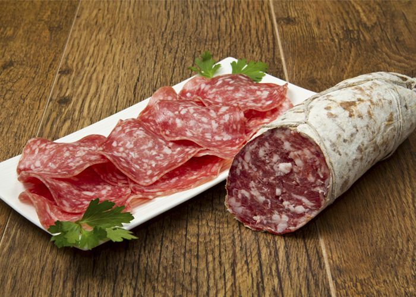

Seccion de fiambres


- 

Jamón Cocido Clásico
Jamón Cocido Tradicional
Jamón Cocido Natural (Apto Celíacos)
Jamón Crudo
Jamon Crudo Especial
Jamón Crudo Seleccionado
Jamón Crudo Gran Reserva
Jamón Crudo Tipo Parma
Jamón Crudo Tipo Ibérico
Jamón Crudo Tipo Ibérico Serrano
Lomo Natural
Lomo tipo Suizo
-
Lomo Embuchado
Lomo Horneado con Hiervas (apto celíacos)
Bondiola Blanca
Bondiola Calabresa
Bondiola Serrana
Bondiola con Pimienta
Pastrón
Pastrón Natural
Mortadela Calchaquí
Mortadela con Pistacho
Salame Cagnoli
Cantimpalo
Matambre de Carne
Matambre de Pollo
Salame Picado Fino (Tandilero)
Salame Picado Grueso (Tandilero)
Salame Picado Fino con Finas Hiervas
Longaniza Española (Tandilera)
Longaniza Calabresa (Tandilera)
Longaniza Mercedina
Longaniza Mercedina Serrana
Salame Fuet
Salame Gran Doblón Tipo Vela
Spiannatta
Spiannatta con Ají Molido
Spiannatta con Finas Hiervas
Spiannatta con Grano Pimienta
Salame Holteim
Salame Picado Fino (cordobés)
Salame Picado Grueso (cordobés)
Sorpresata Italiana
Chorizo Alemán
Salchicha Alemana Larga y Corta
Salchicha Alemana Copetín
Leberwurst de tripa
Leberwurst de tripa Ahumado
Rosca Polaca
Cracobia
Pechuga de Pavo